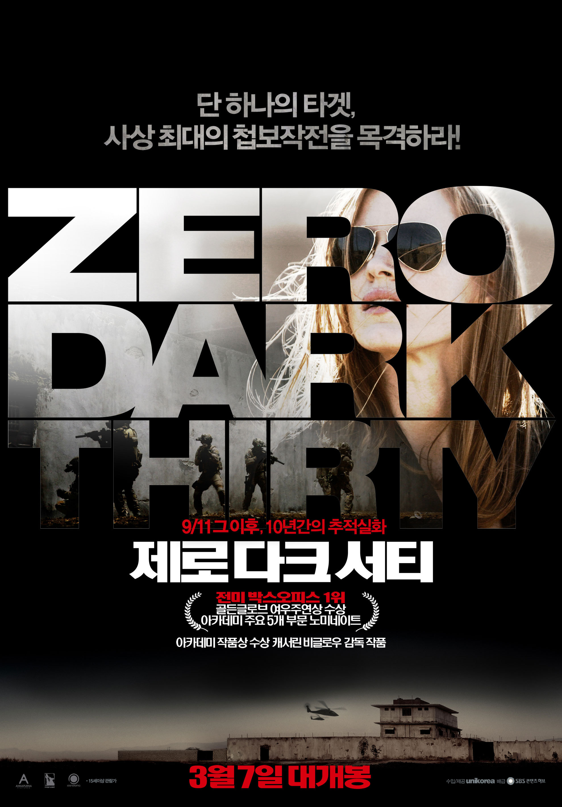
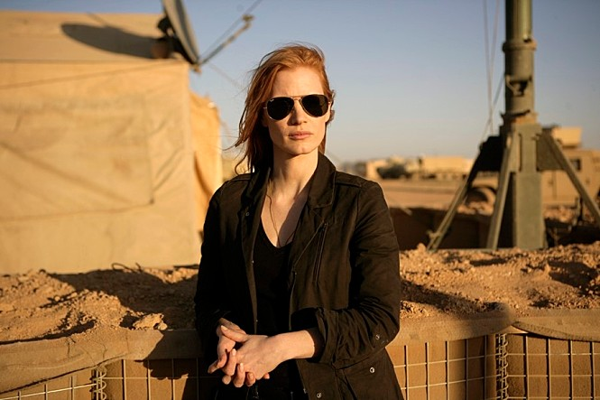

감독 : 캐서린 비글로우
출연
제시카 차스테인 - 마야 역
9/11 그 이후, 반드시 잡고 싶었던 단 하나의 타겟!
베일에 가려져있던 10년간의 추적이 마침내 공개된다!
미 정보부는 매년 거액의 예산을 쏟아 붓지만 9/11 테러를 주도한 오사마 빈 라덴의 흔적조차 찾을 수 없다.
때 마침, 정보수집과 분석에 탁월한 감을 가진 CIA 요원 ‘마야(제시카 차스테인)’가 작전에 투입된다. 그는 순수한 열정과 원칙에 따라 작전에 임하지만 매번 어떤 실마리조차 찾지 못하는 상황에 좌절한다.
어느 날, 진전되지 않는 상황 속에 유일한 단서를 발견하게 된 마야는 동료들과 함께 거래를 시도해보지만 테러리스트들의 함정이었다. 자폭 테러로 인해 가장 친한 동료마저 잃게 된 마야는 극도의 슬픔에 빠지고 설상가상으로 그녀 역시 테러리스트의 제거 대상 블랙리스트에 올라 암살 공격까지 받게 되는데…
이제 더 이상 ‘임무’가 아닌 ‘집념’이 되어버린 사건 앞에서 마야는 이 지독한 추적 과정을 끝낼 결정적 단서와 함께 마지막 작전을 감행하게 된다.
